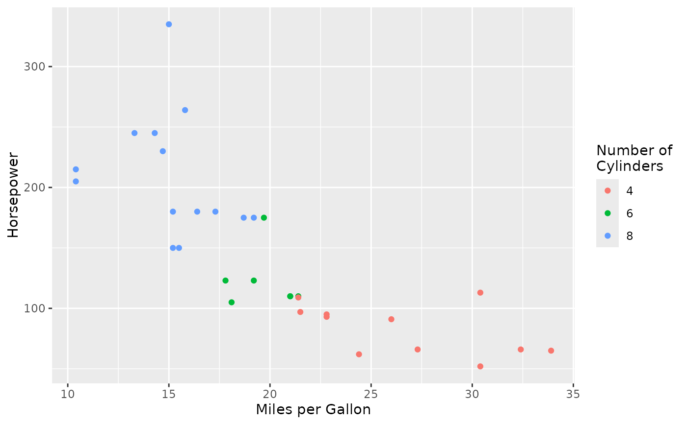
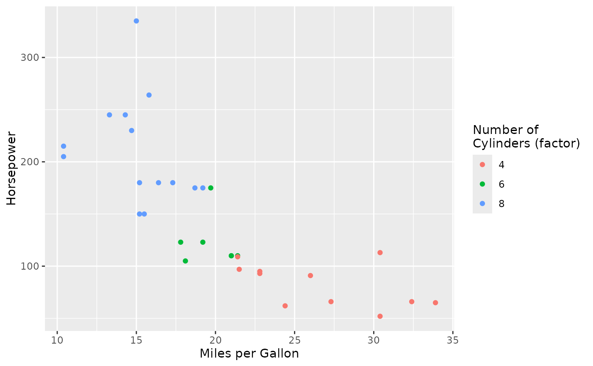

Map Names to Aesthetic Labels in ggplot2
labs_map.RdThis function automatically maps variable names to labels based on a plot's aesthetic mapping. It provides a convenient way to set multiple labels at once by matching the names provided to aes / used by default in ggplot with a prespecified list.
Value
An object of class "labs_map" that can be added to a ggplot object using the + operator. When added, it will automatically apply appropriate labels based on the plot's aesthetic mappings.
Details
This is particularly useful when you have a consistent naming scheme for variables and want to apply human-readable labels without manually specifying each aesthetic.
See also
labs for manual label setting
Examples
library(ggplot2)
# Create plot and apply labels
ggplot(mtcars, aes(x = mpg, y = hp, color = factor(cyl))) +
geom_point() +
labs_map(c(
"mpg" = "Miles per Gallon",
"hp" = "Horsepower",
"cyl" = "Number of\nCylinders"
))

# Even though names (e.g. cyl) are extracted, exact matches take priority
ggplot(mtcars, aes(x = mpg, y = hp, color = factor(cyl))) +
geom_point() +
labs_map(c(
"mpg" = "Miles per Gallon",
"hp" = "Horsepower",
"cyl" = "Number of\nCylinders",
"factor(cyl)" = "Number of\nCylinders (factor)"
))
